Quarterly Data Integration
Consolidated 440 raw files from 22 county and city CSVs per quarter, covering 2021Q1 to 2025Q4.
2021Q1 - 2025Q4 Actual Price Registration Analysis
This page summarizes the project findings, turning actual price registration data into business insights across national market cycles, district-level price-volume structure, building age and floor effects, Greater Taipei GIS hotspots, and the Wenshan District case study.
The analysis covers Taiwan residential transactions from 2021Q1 to 2025Q4. After filtering transaction types, removing abnormal remarks, and engineering building-age and floor-level features, the data supports EDA, GIS visualization, and XGBoost models for the six major municipalities.
The core work was not just visualization. The highly mixed actual price registration data first had to be transformed into an interpretable residential-market scope.
The workflow excludes land-only deals, parking-space-only records, related-party transfers, offices, factories, hotels, and bulk transactions, then uses regular expressions to parse floors, transaction counts, road segments, and presale information.
As a result, the following charts mainly reflect retail residential prices faced by ordinary buyers, rather than commercial real estate or special-case transaction prices.
Consolidated 440 raw files from 22 county and city CSVs per quarter, covering 2021Q1 to 2025Q4.
Removed non-residential and special-remark transactions to prevent related-party transfers, commercial uses, and bulk deals from distorting price benchmarks.
Created analytical fields for building age, floor zone, whole-building status, presale status, parking status, and price per ping.
Combined OSM/Nominatim geocoding for Greater Taipei GIS analysis with XGBoost models for the six major municipalities.
The following points condense the main findings into presentation-ready insights that remain traceable to the underlying charts.
Taiwan's residential market rose on post-pandemic liquidity. The report indicates that prices peaked around 2024Q4; after 2024Q3, the seventh wave of selective credit controls weakened both prices and volume, with transaction volume falling about 20% from the peak.
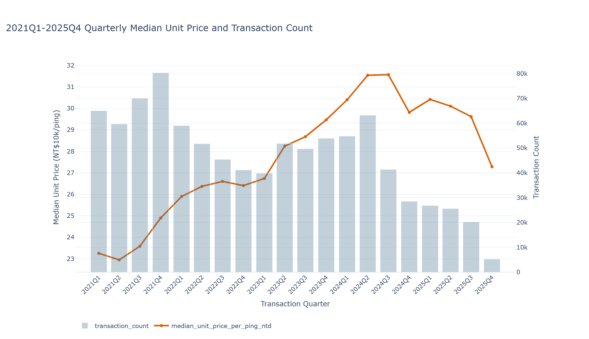
Transaction volume and high prices do not necessarily appear in the same districts. Tamsui, Banqiao, and Sanchong are high-liquidity areas in New Taipei; Zhongli and Taoyuan District anchor Taoyuan, while Sanmin and Nanzih form Kaohsiung's transaction core.
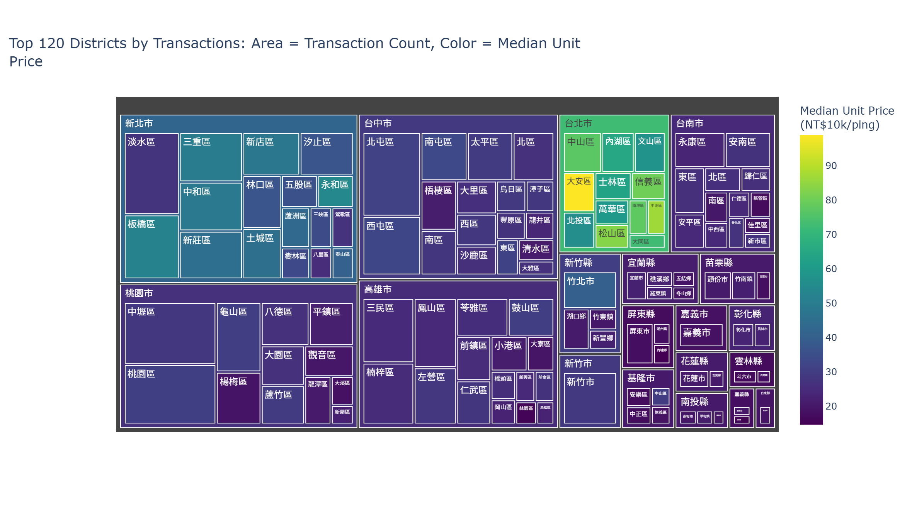
A simple depreciation view cannot fully explain Taiwan housing prices. Homes over 50 years old have low transaction volume but the highest median unit prices, reflecting their concentration in older core districts where value shifts from the building itself to redevelopment land value.
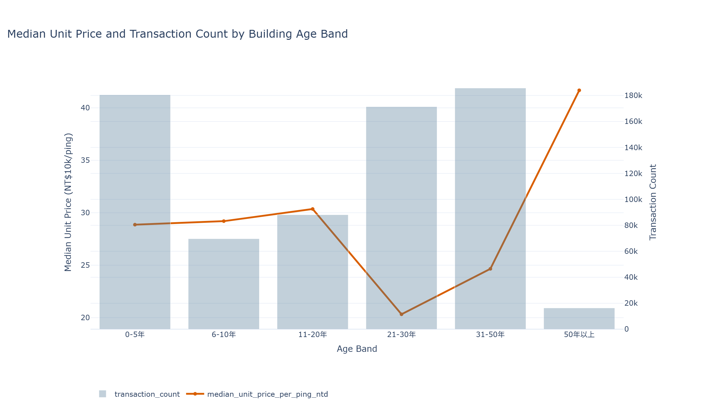
Floor level does not affect price in isolation; it works together with building type to shape residential utility. In walk-up apartments, middle floors roughly correspond to the second and third floors, balancing stair burden, privacy, and street noise, which creates a price premium.
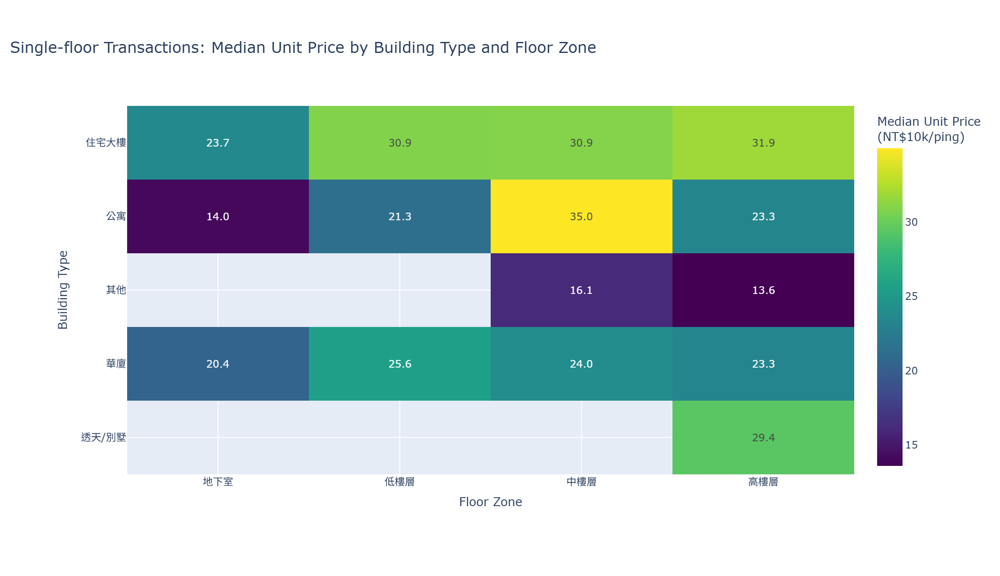
The project uses OSM and Nominatim to geocode Greater Taipei addresses and build residential price-density heatmaps. Da'an, Xinyi, and Songshan show high-price saturation, while Sanchong, Banqiao, Wanhua, and Xinzhuang are relatively more affordable candidates for commuting and affordability tradeoffs.
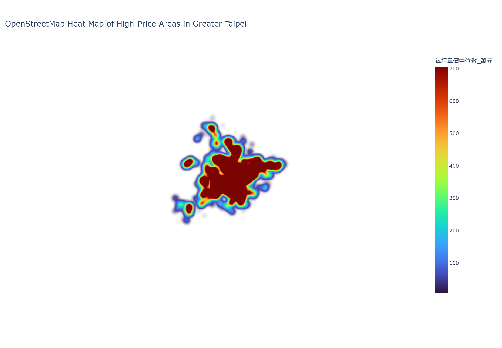
The Wenshan District case study extracts 6,570 valid residential transactions. Even as the national market weakened after 2024, Wenshan's median price per ping continued to rise, gaining about 17% over three years and showing catch-up growth with price resilience.
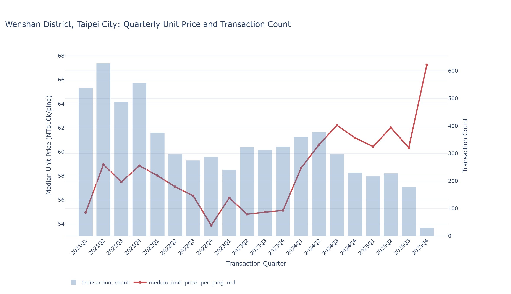
The same dataset can support home-buying decisions, developer site selection, financial risk control, and policy analysis.
Use districts, road segments, and GIS heatmaps to screen out over-premium areas and identify relatively affordable locations with transit access.
Building age, unit size, and the Wenshan case show continued demand for smaller units and resale supply in mature districts, supporting more precise development and aggregation strategies.
After 2024, national correction and Taipei resilience coexist. Credit models should distinguish core assets from peripheral markets instead of applying a single housing-price assumption.
Quarterly price-volume changes after credit controls can be tracked and compared across counties, cities, building-age bands, and total-price segments.
Key project charts are collected here, with filters for exploring related outputs by topic.
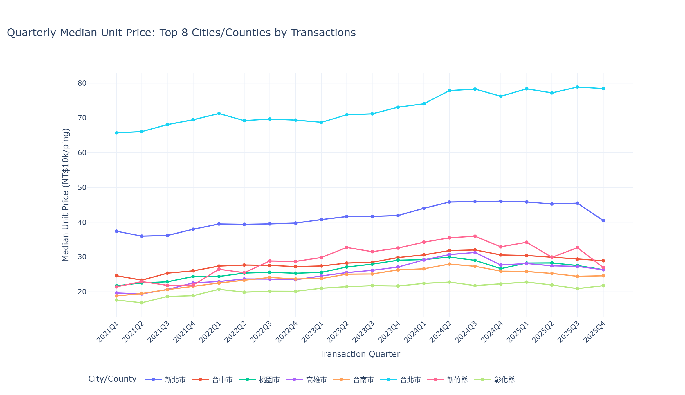
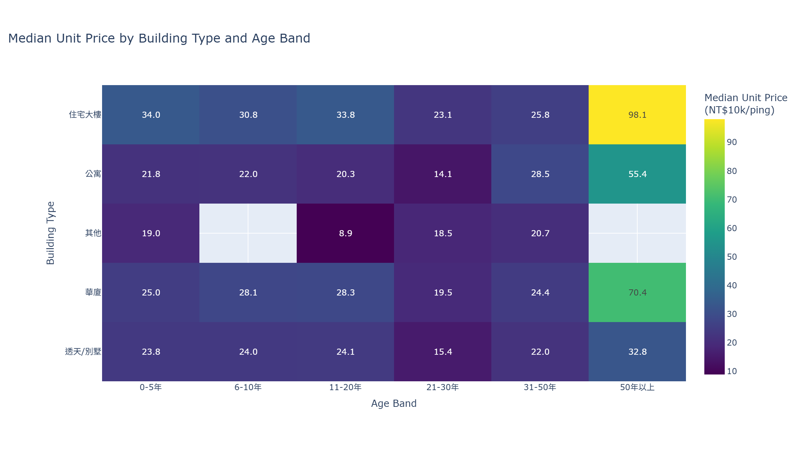
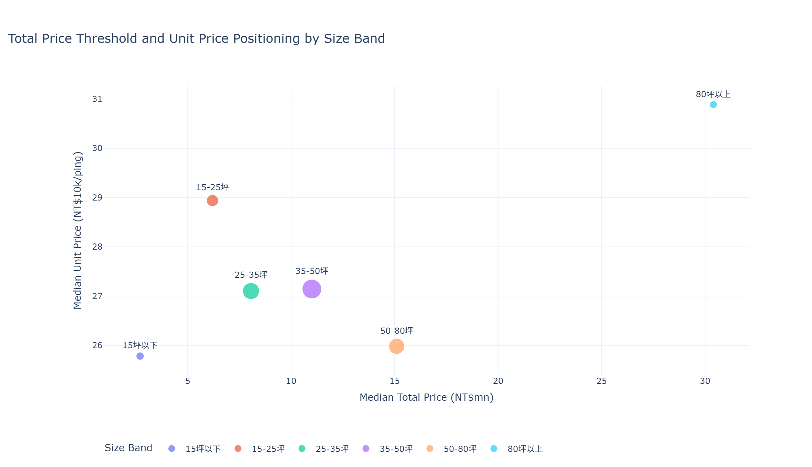
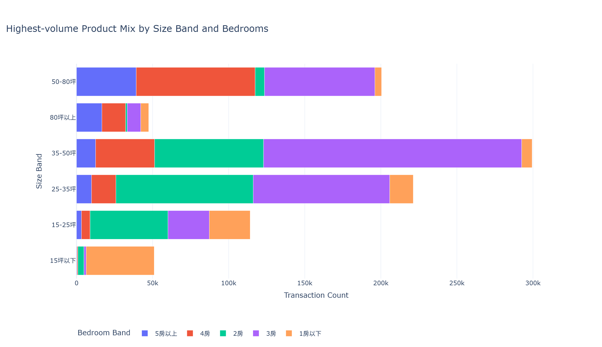
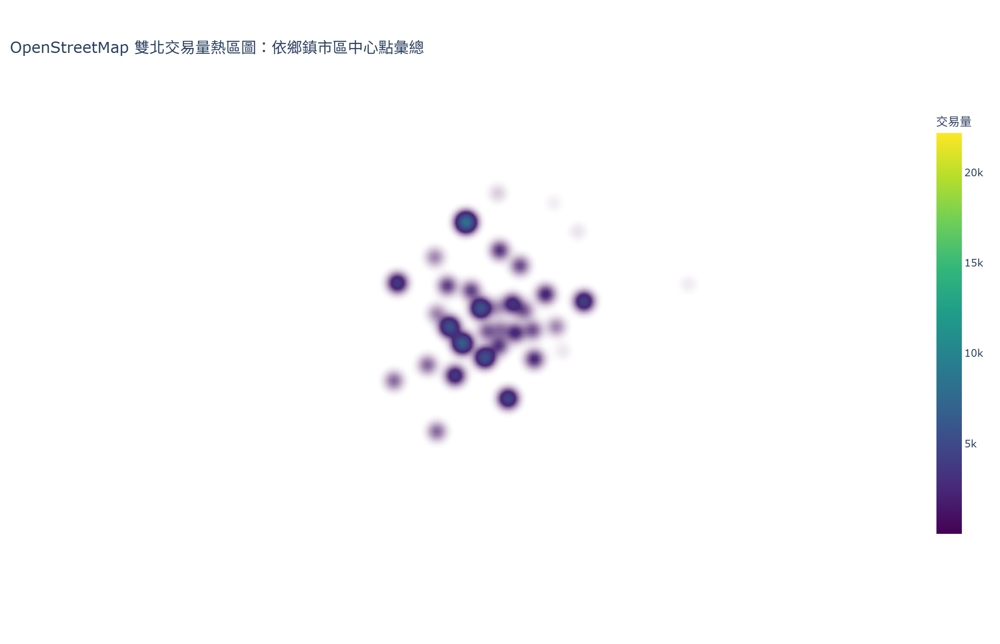
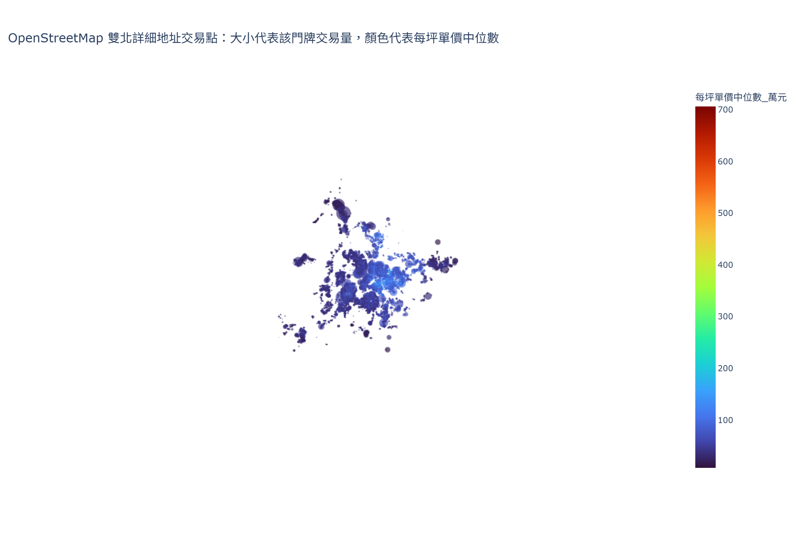
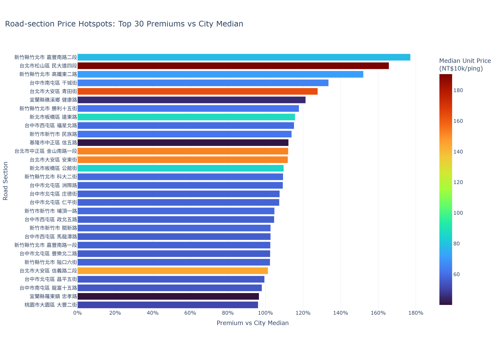
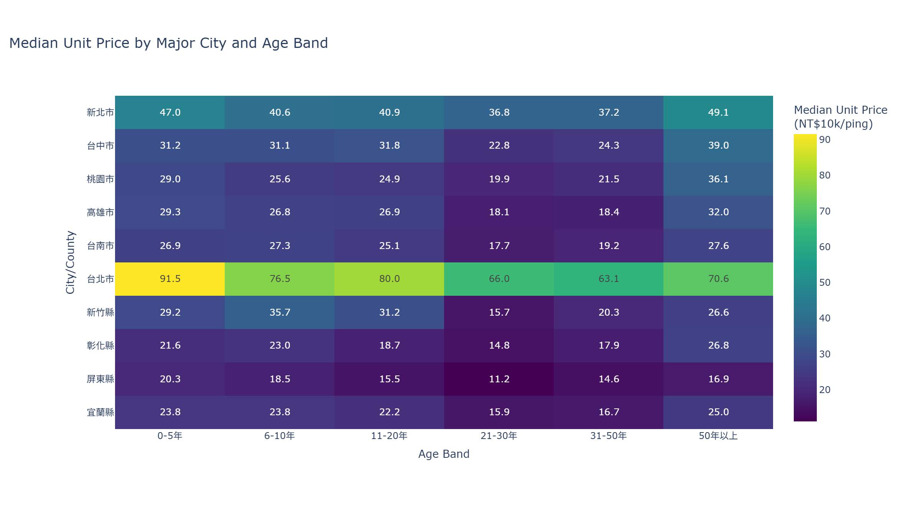
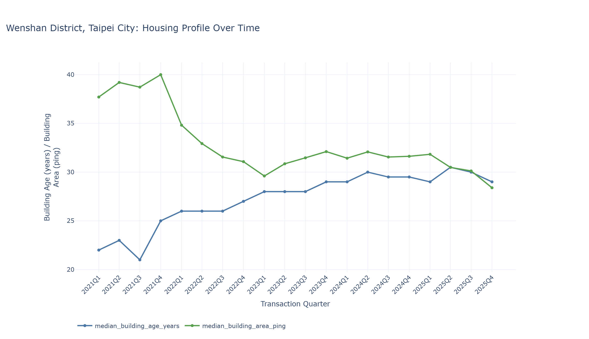
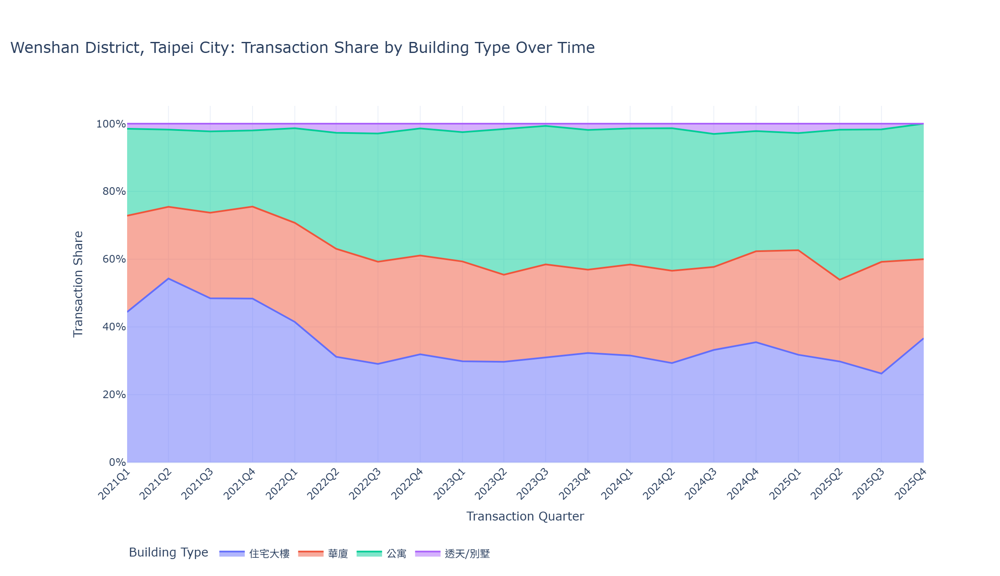
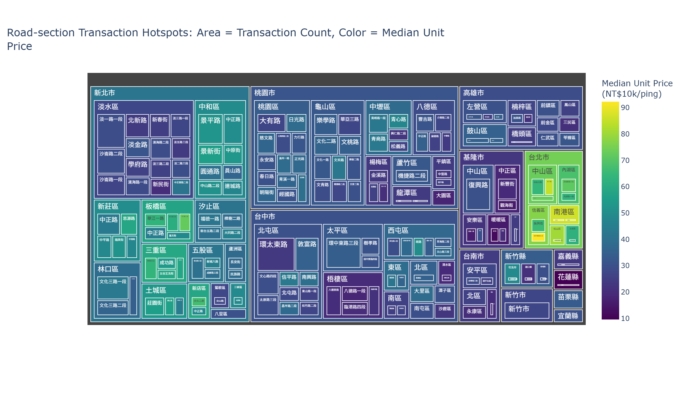
The public GitHub Pages build keeps only the static homepage, exported chart assets, the EDA profile, and the repository README.
{kind=link}
{kind=link}
{kind=link}
{kind=link}
{kind=link}
{kind=link}
{kind=link}
{kind=link}
{kind=link}
{kind=link}
{kind=link}
{kind=link}